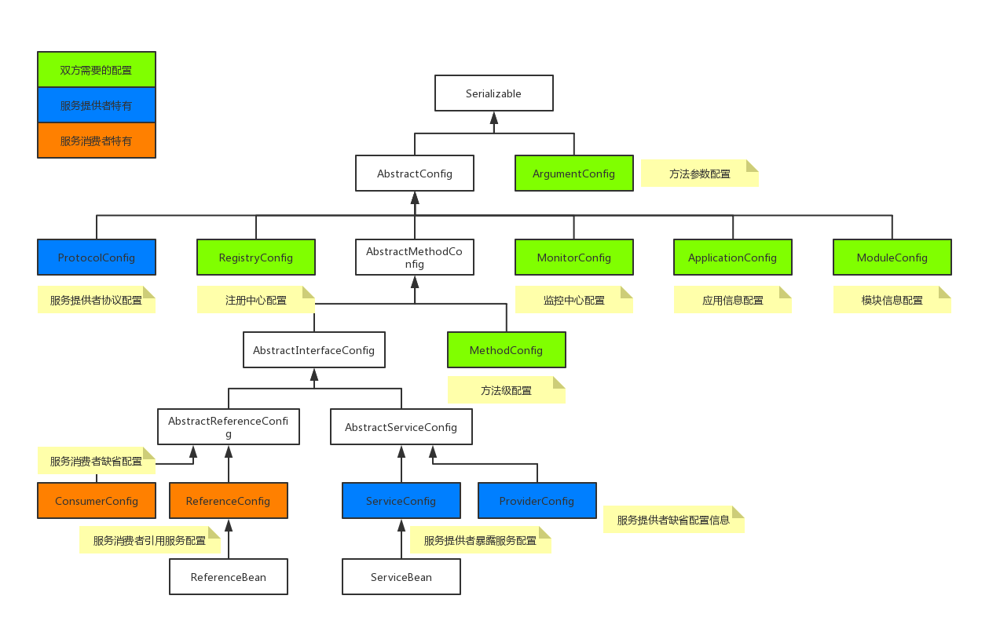
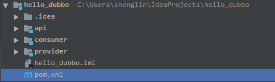
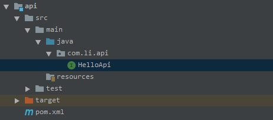
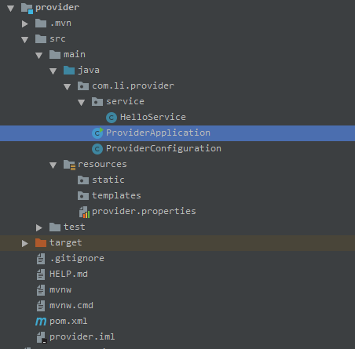
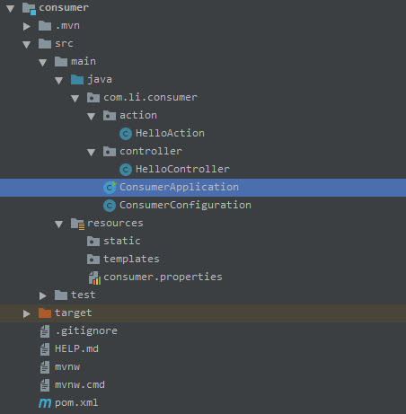
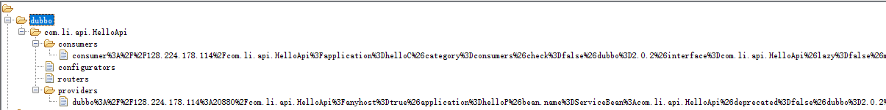
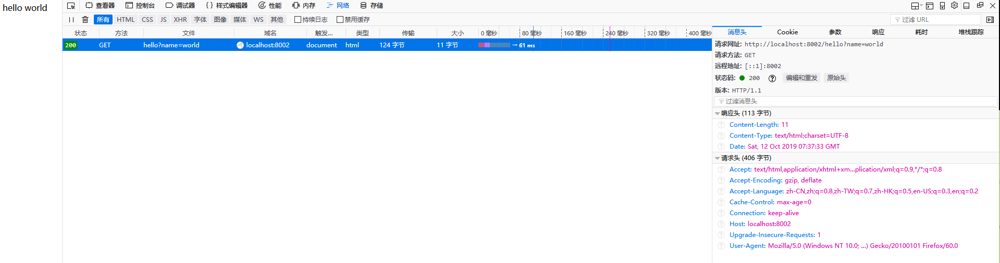

原文连接:https://www.cnblogs.com/iUtopia/p/11653098.html
一、Dubbo的注解配置
在Dubbo 2.6.3及以上版本提供支持。
1、@Service（全路径@org.apache.dubbo.config.annotation.Service）
配置服务提供方用以暴露服务，添加于api接口的实现类上，并可通过注解提供的属性进一步定制化服务。
其中比较重要的属性有：
- @Service只能定义在一个类上，用以提供一个服务的具体实现
- interfaceClass：指定服务提供方实现的interface的类
- interfaceName：指定服务提供方实现的interface的类名
- version
- group：指定服务分组
- export：是否暴露服务
- register：是否向注册中心注册服务
- application：应用配置
- module：模块配置
- provider：服务提供方配置
- protocol：传输层协议配置
- monitor：监控中心配置
- registry：注册中心配置
注意，8-13需要提供对应的spring bean的名字，bean的组装可以通过传统的XML配置方式完成，或者Java Config的方式配置（推荐使用）。
2、@Reference（全路径@org.apache.dubbo,config.annotation.Reference）
服务消费方用以引用服务，通过动态代理来实现接口的引用，同样可通过注解提供的属性进一步定制化服务。
其中比较重要的属性有：
- @Reference通常定义在一个字段上，表示一个服务的引用
- interfaceClass：指定服务的interface的类
- interfaceName：指定服务的interface的类名
- version
- group
- url：指定服务提供方的URL地址，绕过注册中心直接发起调用
- application：应用配置
- module：模块配置
- consumer：服务消费方配置
- protocol：协议配置
- monitor：监控中心配置
- registry：注册中心配置
同上，7-12需要提供对应的spring bean的名字，推荐使用Java Config的方式进行组装Bean。
3、@EnableDubbo（全路径org.apache.dubbo.config.spring.context.annotation.EnableDubbo）
@EnableDubbo注解是@EnableDubboConfig和@DubboComponentScan两者组合的便捷表达。
@EnableDubbo提供scanBasePackages和scanBasePackageClasses属性，可以在指定的包名或者类中扫描Dubbo的服务提供者（@Service标注）和服务消费者（@Reference标注），扫描到服务的提供者或消费者后，对其进行相应的组装并初始化， 最终完成服务的暴露或引用。
扫描提供者和消费者的功能@DubboComponnetScan也可以实现，@EnableDubboConfig提供外部化配置的支持。
二、Dubbo的API属性配置
目前，通过@Service、@Reference、@EnableDubbo注解，实现了服务的暴露和发现引用，除此之外，还需要一些其他的属性配置，诸如应用名、注册中心、协议信息等。
1、Dubbo中配置类结构

2、注入这些配置属性，有两种方式，分别是采用配置文件和Java Config硬编码的形式。
2.1、配置文件方式
在resources下创建xxx.properties文件，在其中添加各项属性配置，形式如下：
dubbo.application.name=provider
dubbo.registry.address=zookeeper://127.0.0.1:2181
dubbo.protocol.name=dubbo
dubbo.protocol.port=20880然后通过@PropertySource("classpath:/xxx.properties")注解导入配置；
导入属性在启动时，会被自动组装成相应的配置类。
2.2、Java Config硬编码方式
创建providerConfiguration类，标注@Configuration注解；
在该类中，通过@Beab的形式分别配置需要的配置类，如下：
1 @Bean
2 public ApplicationConfig applicationConfig() {
3 ApplicationConfig applicationConfig = new ApplicationConfig();
4 applicationConfig.setName("provider");
5 return applicationConfig;
6 }
7
8 @Bean
9 public ProtocolConfig protocolConfig() {
10 ProtocolConfig protocolConfig = new ProtocolConfig();
11 protocolConfig.setName("dubbo");
12 protocolConfig.setPort("20880");
13 return protocolConfig;
14 }
15
16 @Bean
17 public RegistryConfig registryConfig() {
18 RegistryConfig registryConfig = new RegistryConfig();
19 registryConfig.setProtocol("zookeeper");
20 registryConfig.setAddress("localhost");
21 registryConfig.setPort(2181);
22 return registryConfig;
23 }在具体实现中，创建Config类，通过Java Config技术（@Configuration）和annotation扫描（@EnableDubbo）来发现、组装服务提供者和消费者。
三、其他相关Spring注解
1、@Configuration（全路径org.springframework.context.annotation.Configuration）
@Configuration注解用来定义配置类，可替换XML配置文件，被注解类内有多个@Bean标注方法，这些方法会被AnnotationConfigApplicationContext或者AnnotationConfigWebApplicationContext类进行扫描，用于构建bean并初始化spring容器。
@Configuration注解的配置类有以下要求：
-
- @Configuration注解的配置类不可以是final类型。
- 内部嵌套的内部Configuration类必须是静态类。
1.1、@Configuration配置spring并启动spring容器
起到为spring容器配置应用上下文的作用：
ApplicationContext context = new AnnotationConfigApplicationContext(TestConfiguration.class);效果等价于用XML文件配置：
ApplicationContext context = new ClassPathXmlApplicationContext("test-spring-context.xml");1.2、@Configuration启动容器+@Bean注册bean，@Bean下管理bean的生命周期
@Bean标注在方法上，作用相当于注册Bean，注意：
-
- @Bean标注在返回实例的方法上，如果未通过@Bean指定bean的名称，默认与标注方法名同名。
- @Bean标注默认bean作用域为单例singleton，可通过@Scope()设置。
- @Bean的作用是注册bean，因此也可以用@Component、@Controller、@Service、@Repository等进行注册，不过需要配置@ComponentScan注解进行自动扫描。
- 可以通过@Bean管理bean的生命周期。
1.3、组合多个配置来源
通过@ImportSource("classpath:/xxx.xml")导入XML配置文件；
通过@Import(TestConfiguration.class)导入其他配置类；
通过@Configuration嵌套（嵌套额Configuration类必须为静态类）。
2、@Component、@Service、@Controller、@Repository、@RestController、@Bean
修饰的类均会被扫描到并注入到spring的bean容器中。
2.1、@Component
通用注解，可以被注入到spring容器进行管理。
2.2、@Service、@Controller、@Repository是针对不同使用场景采用的特定功能化的注解组件。
-
- @Service：作用于业务逻辑层
- @Controller：作用于表现层（springMVC注解），注解的bean会被spring-mvc框架使用，进行前端请求的处理、转发、重定向，包括调用service层的方法
- @Repository：作用于持久层，表明该类是用来执行与数据库相关的操作，并支持自动处理数据库操作产生的异常
2.3、@Controller和@RestController
首先两者都是表明该类可以接受HTTP请求，@RestController相当于@Controller+@ResponseBody的作用。
在@RestController中，返回的应该是一个对象，即使没有前端界面的渲染，也可以看到返回的是该对象对应的json字符串，而前端的作用就是利用返回的json进行解析并渲染界面。
在@Controller中，返回的是一个字符串，或者代表与字符串匹配的模板名称，与HTML页面配合使用。
- 如果只是用@RestController注解，则Controller方法中无法返回jsp页面，配置的视图解析器InternalResourceViewResolver不起作用，返回的内容就是方法中return的值。
- 如需要指定返回某个页面，则需要用@Controller配合视图解析器InternalResourceViewResolver使用。
- 如果需要返回Json、XML或自定义的mediaType内容到页面，@RestController直接就能做到，但在@Controller中需要在相应方法上加上@ResponseBody注解。
2.4、@Bean和@Component（@Service、@Controller、@Repository）的区别
- @Component注解表明一个类作为组件类，并告知spring为该类创建bean。
- @Bean注解告诉spring这个方法将返回一个对象，该对象要注册为spring应用上下文中的bean。
两者目的都是注册bean到Spring容器中。
- @Component通常是通过类路径扫描来自动侦测并自动装配到spring容器中。作用于类。
- @Bean注解通常是我们在标有该注解的方法中自定义产生这个bean的逻辑。作用于方法。
3、@Autowired、@Resource
@Autowired默认按照类型装配。
默认要求依赖的对象必须存在，若允许为NULL，可以设置required属性为false。
@Resouce默认按照名称装配。
可以通过name属性指定，指定了name属性，就只能按照名称装配。
有两个重要的属性，name和人type，将name属性解析为bean的名字，type解析为bean的类型。
使用了name属性，则使用byName的自动注入策略；而使用type属性，则使用byType的自动注入策略。
@Resouce的装配顺序：
- 同时指定了name和type属性，从spring上下文找到唯一匹配的bean进行装配，找不到则抛出异常。
- 指定了name属性，从上下文查找名称匹配的bean进行装配，找不到则抛出异常。
- 指定了type属性，从上下文查找类型匹配的唯一bean进行装配，找不到或者找到多个则抛出异常。
- 属性均未指定，则默认按照byName的方式进行查找装配。
4、@PropertySource、@ImportResource
@ImportResource：导入spring的配置文件，如xxx.XML。
@PropertySource
@ConfigurationProperties是默认从全局配置文件中获取指定的值，例如@ConfigurationProperties(prefix=“person”)是从application.yml(properties)中加载person的属性并映射到对应类的属性。
如果配置在xxx.properties中（非全局配置文件），就需要用@PropertySource(value={"classpath:/xxx.properties"})导入指定配置文件。
四、项目搭建流程
1、注册中心Zookeeper搭建
Zookeeper的安装不在此介绍，可参考：Zookeeper单点与集群安装
2、项目框架搭建
创建maven项目hello_dubbo，删掉其中的src文件夹，并添加对spring-boot的依赖，作为整个项目运行环境。
新建new module，依次为api（服务接口公共包）、provider（服务提供者模块）、consumer（服务消费者模块）,。
此时项目结构如图：

pom文件关键信息为：


1 <groupId>com.li</groupId>
2 <artifactId>hello_dubbo</artifactId>
3 <version>1.0-SNAPSHOT</version>
4
5 <parent>
6 <groupId>org.springframework.boot</groupId>
7 <artifactId>spring-boot-starter-parent</artifactId>
8 <version>2.1.9.RELEASE</version>
9 <relativePath/>
10 </parent>
11
12 <modules>
13 <module>api</module>
14 <module>provider</module>
15 <module>consumer</module>
16 </modules>3、api包
在pom文件中配置依赖关系：
1 <parent>
2 <groupId>com.li</groupId>
3 <artifactId>hello_dubbo</artifactId>
4 <version>1.0-SNAPSHOT</version>
5 </parent>
6
7 <artifactId>api</artifactId>在api包中创建要对外提供服务的接口类HelloAPI.java：
1 package com.li.api;
2
3 public interface HelloApi {
4
5 public String sayHello(String name);
6 }此时的api模块结构：

4、provider项目
1、修改pom文件，添加相关依赖：
1 <parent>
2 <groupId>com.li</groupId>
3 <artifactId>hello_dubbo</artifactId>
4 <version>1.0-SNAPSHOT</version>
5 </parent>
6
7 <artifactId>provider</artifactId>
8 <version>0.0.1-SNAPSHOT</version>
9 <name>provider</name>
10
11 <dependencies>
12 <!--web支持-->
13 <dependency>
14 <groupId>org.springframework.boot</groupId>
15 <artifactId>spring-boot-starter-web</artifactId>
16 </dependency>
17 <!--添加Zookeeper依赖-->
18 <dependency>
19 <groupId>org.apache.zookeeper</groupId>
20 <artifactId>zookeeper</artifactId>
21 <version>3.5.5</version>
22 <exclusions>
23 <exclusion>
24 <groupId>org.slf4j</groupId>
25 <artifactId>slf4j-log4j12</artifactId>
26 </exclusion>
27 </exclusions>
28 </dependency>
29 <!--添加Dubbo依赖，已并入apache-->
30 <dependency>
31 <groupId>org.apache.dubbo</groupId>
32 <artifactId>dubbo</artifactId>
33 <version>2.7.3</version>
34 </dependency>
35 <!--添加zookeeper客户端框架Curator-->
36 <dependency>
37 <groupId>org.apache.curator</groupId>
38 <artifactId>curator-framework</artifactId>
39 <version>4.2.0</version>
40 </dependency>
41 <dependency>
42 <groupId>org.apache.curator</groupId>
43 <artifactId>curator-recipes</artifactId>
44 <version>4.2.0</version>
45 </dependency>
46 <dependency>
47 <groupId>org.springframework.boot</groupId>
48 <artifactId>spring-boot-starter-test</artifactId>
49 <scope>test</scope>
50 </dependency>
51 <!--添加对API模块的依赖-->
52 <dependency>
53 <groupId>com.li</groupId>
54 <artifactId>api</artifactId>
55 <version>1.0-SNAPSHOT</version>
56 <scope>compile</scope>
57 </dependency>
58 </dependencies>2、添加service包，在其中创建api接口的实现类，提供服务的具体实现，并用@Service暴露服务：
1 package com.li.provider.service;
2
3 import com.li.api.HelloApi;
4 import org.apache.dubbo.config.annotation.Service;
5
6 @Service
7 public class HelloService implements HelloApi {
8
9 @Override
10 public String sayHello(String name) {
11 return "hello " + name;
12 }
13 }3、provider的配置注入方式选择采用properties文件的形式。
在resources下添加provider.properties配置文件：
1 dubbo.application.name=helloP
2 dubbo.registry.address=zookeeper://127.0.0.1:2181
3 dubbo.protocol.name=dubbo
4 dubbo.protocol.port=20880
5 server.port=8001在主目录下创建Configuration类，作为配置类：
1 package com.li.provider;
2
3 import org.apache.dubbo.config.spring.context.annotation.EnableDubbo;
4 import org.springframework.context.annotation.Configuration;
5 import org.springframework.context.annotation.PropertySource;
6
7 @Configuration
8 @EnableDubbo(scanBasePackages = "com.li.provider.service")
9 @PropertySource("classpath:/provider.properties")
10 public class ProviderConfiguration {
11 }4、启动类选择springBoot启动：
1 package com.li.provider;
2
3 import org.springframework.boot.SpringApplication;
4 import org.springframework.boot.autoconfigure.SpringBootApplication;
5
6 @SpringBootApplication
7 public class ProviderApplication {
8
9 public static void main(String[] args) {
10 SpringApplication.run(ProviderApplication.class, args);
11 }
12
13 }5、至此，Provider模块完成，项目结构如下：

5、consumer项目
1、修改pom文件，添加相关依赖：
1 <parent>
2 <groupId>com.li</groupId>
3 <artifactId>hello_dubbo</artifactId>
4 <version>1.0-SNAPSHOT</version>
5 </parent>
6
7 <artifactId>consumer</artifactId>
8 <version>0.0.1-SNAPSHOT</version>
9 <name>consumer</name>
10
11 <dependencies>
12 <!--web支持-->
13 <dependency>
14 <groupId>org.springframework.boot</groupId>
15 <artifactId>spring-boot-starter-web</artifactId>
16 </dependency>
17 <!--添加Zookeeper依赖-->
18 <dependency>
19 <groupId>org.apache.zookeeper</groupId>
20 <artifactId>zookeeper</artifactId>
21 <version>3.5.5</version>
22 <exclusions>
23 <exclusion>
24 <groupId>org.slf4j</groupId>
25 <artifactId>slf4j-log4j12</artifactId>
26 </exclusion>
27 </exclusions>
28 </dependency>
29 <!--添加Dubbo依赖，已并入apache-->
30 <dependency>
31 <groupId>org.apache.dubbo</groupId>
32 <artifactId>dubbo</artifactId>
33 <version>2.7.3</version>
34 </dependency>
35 <!--添加zookeeper客户端框架Curator-->
36 <dependency>
37 <groupId>org.apache.curator</groupId>
38 <artifactId>curator-framework</artifactId>
39 <version>4.2.0</version>
40 </dependency>
41 <dependency>
42 <groupId>org.apache.curator</groupId>
43 <artifactId>curator-recipes</artifactId>
44 <version>4.2.0</version>
45 </dependency>
46 <dependency>
47 <groupId>org.springframework.boot</groupId>
48 <artifactId>spring-boot-starter-test</artifactId>
49 <scope>test</scope>
50 </dependency>
51 <!--添加对API模块的依赖-->
52 <dependency>
53 <groupId>com.li</groupId>
54 <artifactId>api</artifactId>
55 <version>1.0-SNAPSHOT</version>
56 <scope>compile</scope>
57 </dependency>
58 </dependencies>2、创建action包，新增HelloAction类，作为MVC框架的service层，提供业务逻辑处理并利用@Reference提供对远程服务的引用：
1 package com.li.consumer.action;
2
3 import com.li.api.HelloApi;
4 import org.apache.dubbo.config.annotation.Reference;
5 import org.springframework.stereotype.Service;
6
7 @Service //注意为spring的@Service注解，将其作为bean管理
8 public class HelloAction {
9
10 @Reference(check = false)
11 private HelloApi helloApi;
12
13 public String doHello(String name) {
14 return helloApi.sayHello(name);
15 }
16 }3、创建controller包，新增HelloController类，作为MVC框架的controller层，提供前端请求的转发，以及业务逻辑的调用：
1 package com.li.consumer.controller;
2
3 import com.li.consumer.action.HelloAction;
4 import org.springframework.beans.factory.annotation.Autowired;
5 import org.springframework.web.bind.annotation.GetMapping;
6 import org.springframework.web.bind.annotation.RequestParam;
7 import org.springframework.web.bind.annotation.RestController;
8
9 @RestController
10 public class HelloController {
11
12 @Autowired
13 private HelloAction action;
14
15 @GetMapping("/hello")
16 public String hello(@RequestParam("name")String name) {
17 return action.doHello(name);
18 }
19 }4、consumer的配置注入方式选择采用Java Config硬编码的形式。
在resources下添加consumer.properties配置文件：
1 server.port=8002 //注册对外提供服务的端口在主目录下创建Configuration类，作为配置类：
1 package com.li.consumer;
2
3 import org.apache.dubbo.config.ApplicationConfig;
4 import org.apache.dubbo.config.RegistryConfig;
5 import org.springframework.context.annotation.Bean;
6 import org.springframework.context.annotation.Configuration;
7 import org.springframework.context.annotation.PropertySource;
8
9 @Configuration
10 @PropertySource("classpath:/consumer.properties")
11 public class ConsumerConfiguration {
12
13 @Bean
14 public ApplicationConfig applicationConfig() {
15 ApplicationConfig config = new ApplicationConfig();
16 config.setName("helloC");
17 return config;
18 }
19
20 @Bean
21 public RegistryConfig registryConfig() {
22 RegistryConfig config = new RegistryConfig();
23 config.setAddress("zookeeper://127.0.0.1:2181");
24 return config;
25 }
26 }5、启动类选择springBoot启动：
1 package com.li.consumer;
2
3 import org.springframework.boot.SpringApplication;
4 import org.springframework.boot.autoconfigure.SpringBootApplication;
5
6 @SpringBootApplication
7 public class ConsumerApplication {
8
9 public static void main(String[] args) {
10 SpringApplication.run(ConsumerApplication.class, args);
11 }
12
13 }6、至此，Consumer模块完成，项目结构如下：

6、项目启动
项目启动时，首先启动Zookeeper，命令行执行zkServer.cmd。
正常启动顺序应该先启动提供者，然后启动消费者，因为@Reference注解在启动时默认会去注册中心检查所引用服务状态是否正常提供服务，若想先启动消费者，可选择关闭检查功能，@Reference(check=false)。
全部启动后，可打开zk客户端查看已注册服务情况。

最后打开浏览器，访问localhost:8002/hello?name=world发现正常引用服务。
